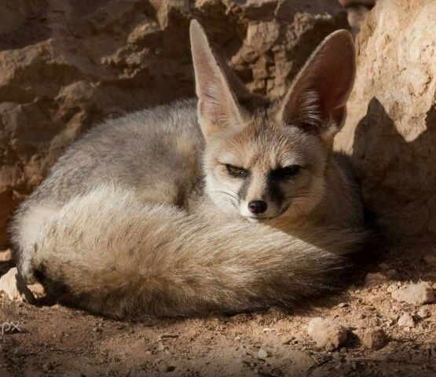
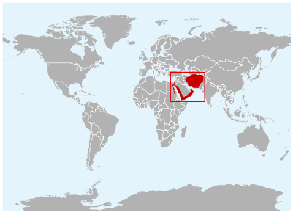
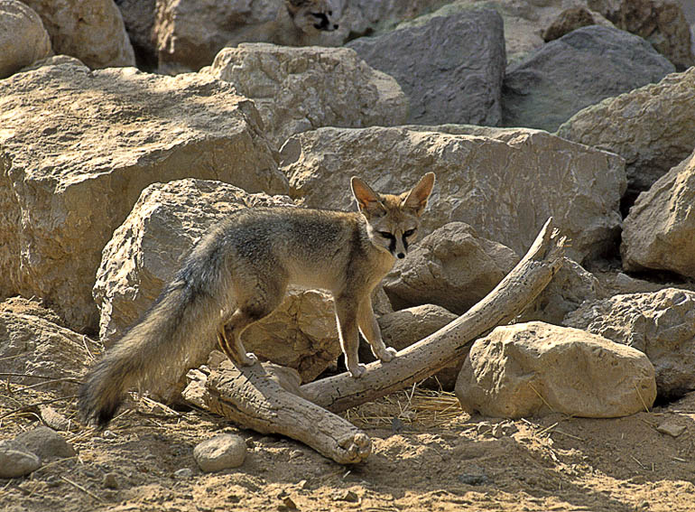
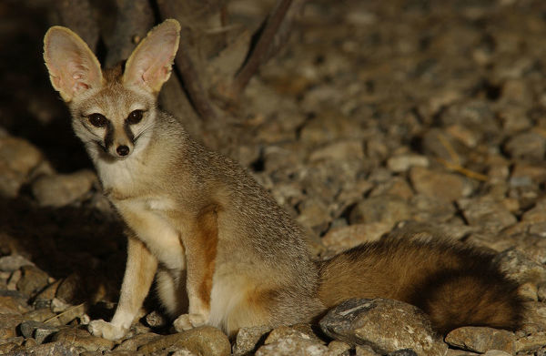

Description of Blanford's Fox
Appearance
 Blanford's fox is a small fox with wide ears and a long, bushy tail nearly equal to the length of its body. Its body size often varies geographically. The body is brownish-grey, fading to light yellow on the belly. The winter coat is soft and woolly, with a dense black undercoat and white fur speckles in the dorsal area; together with a somewhat thicker layer of fat, it serves as thermal insulation in cold and dry winter. The summer coat is less thick, the fur is paler, and the white hair is less noticeable.
This fox has an ability to climb rocks and make jumps described as "astonishing", jumping to ledges 3 m above them with ease, and as part of their regular movements and climbing vertical, crumbling cliffs by a series of jumps up vertical sections. The foxes use their sharp, curved claws and naked footpads for traction on narrow ledges and their long, bushy tails as a counterbalance.
Habitat
The Blanford's fox has a rather discontinuous range. Initially known only from southwest Asia, this species was reported in Israel in 1981 and was later found to be more widespread in the Arabian Peninsula. Peters and Rödel (1994) reviewed the available distribution records of this species and presented, for the eastern part of the range, what they considered to be definitive records from around the Iranian Plateau in Iran, Turkmenistan and Pakistan, with more doubtful records (usually based on skins collected from fur bazaars or otherwise indirectly) from Afghanistan and Tajikistan (though there is no such record).
 There are now confirmed records in the Middle East from Jordan, the Sinai Peninsula (Egypt), Oman, Saudi Arabia and the United Arab Emirates. They have long been suspected of occurring in Yemen and have been reported at an altitude of about 1,200 m above sea level in Hawf Forest, Al Mahra Governorate, in the far east of Yemen, near the border with Oman. It also seemed possible that they may have lived in western Yemen, where the mountains in southwestern Arabia were contiguous, and the camera trapping record in February 2014 in Wadi Sharis in Hajjah Governorate, NW of Sana'a, now confirms their existence.
Behaviour
 The Blanford's fox is strictly nocturnal, an activity pattern that is most definitely an anti-predator response to diurnal raptors. There are no significant seasonal or gender variations in the activity patterns, and climate conditions at night in the desert of Israel seemed to have little direct effect on their activity, except under extreme conditions.
 Blanford's foxes are thought to be strictly monogamous. Monogamy may be beneficial in this species as the dispersion of their prey is such that, in order to accommodate additional adults, it would demand a territorial expansion that would bring more costs than benefits.
Blanford's foxes are thought to be strictly monogamous. Monogamy may be beneficial in this species as the dispersion of their prey is such that, in order to accommodate additional adults, it would demand a territorial expansion that would bring more costs than benefits.